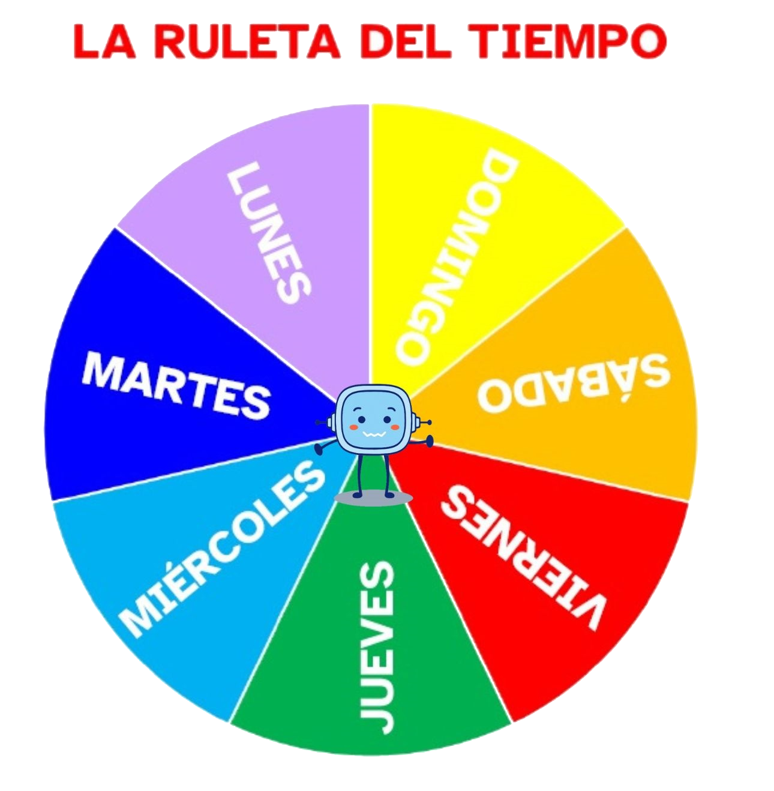

La actividad es individual. Cada persona responde a las preguntas.
Moderador/moderadora
Definición:
Persona que preside y dirige un debate, una reunión, una mesa redonda, etc.
Ejemplo:
Tuve que ser el moderador del debate sobre el uso de los antibióticos.
Noción/nociones
Definición:
Conocimiento o idea que se tiene de algo.
Ejemplo:
Al terminar el tema tendremos nociones sobre las unidades de medida.
Ya veo que sabéis mucho del tiempo, pero necesitamos más para hacer nuestra línea del tiempo, ahora vamos a aprender cosas nuevas. En estas páginas vamos a conocer los días de la semana, los meses del año, las estaciones y las horas del reloj. ¿Os apetece?
Empezaremos por trabajar los días de la semana, te servirán para saber qué cosas hago según el día que sea.
Lectura facilitada
Sabes muchas cosas del tiempo.
Aprende cosas nuevas
para hacer nuestra línea del tiempo.
Vamos a conocer:
Los días de la semana.
Los meses del año.
Las estaciones.
Las horas del reloj.
Ahora aprendemos los días de la semana.
1. La semana
Como seguro que ya sabes, una semana tiene siete días, que son:
Los días de la semana se llaman así en honor a algunos planetas de nuestro sistema solar, como Marte, Mercurio o Júpiter.
2. La ruleta del tiempo
Paso 1
Nos agrupamos en equipos de 4 personas.
Paso 2
Una persona del grupo dará vueltas a la ruleta y será la moderadora del grupo dando la palabra.
Paso 3
Según el día en que se pare, una persona contará lo que va a hacer ese día; otra persona contará lo que hizo el día anterior; y la última, contará lo que hará el día siguiente.
Paso 4
Contad a los demás grupos lo que vais a hacer o habéis hecho.

Definición:
Persona que preside y dirige un debate, una reunión, una mesa redonda, etc.
Ejemplo:
Tuve que ser el moderador del debate sobre el uso de los antibióticos.
Lectura facilitada
Sigue los siguientes pasos.
1. Hacemos equipos de 4 personas.
2. Una persona gira la ruleta y
da el turno para hablar.
3. La ruleta para en un día de la semana.
Una persona cuenta qué hace ese día.
Otra persona dice qué hizo el día de antes.
La última persona cuenta lo que hará el día siguiente.
Ahora vamos a trabajar de manera individual. Atrévete con todas las opciones y… ¡Buen fin de semana!
Definición:
Trabajo que hace cada persona sola.
Ejemplo:
La actividad es individual. Cada persona responde a las preguntas.
Opción A. El lugar de los días
Aquí tienes los siete días de la semana, piensa y ordénalos según ocurran en el tiempo. Con la ayuda de la familia lee cada día de la semana y ordénalas. ¡ ÁNIMO !
LUNES
MARTES
MIÉRCOLES
JUEVES
VIERNES
SÁBADO
DOMINGO
Comprobar
¡Correcto!
No es correcto... Respuesta correcta:
Opción B. Empareja los días de la semana
Une cada día de la semana con la tarjeta marrón según las pistas que te da. Puedes leer y escuchar las pistas. Tú decides.
Lumen dice Ya sé los días de la semana
Son 7: LUNES, MARTES, MIÉRCOLES, JUEVES, VIERNES, SÁBADO y DOMINGO.
Clavis dice La importancia de ordenar los días
Es importante que identifiquemos todos los días de las semana ya que te ayudará a saber organizarte, conocer qué día cumplen años nuestros familiares y amigos y amigas, también a identificar las nociones del tiempo como “el ayer”, “hoy” y “mañana”.
Para conseguir hacer estas cosas y otras que te proponen más adelante, debes tener en cuenta lo siguiente:
Entender las cosas que te van explicando.
Estar atento y atenta para enterarte de todo.
Pensar en todo y preguntar si no lo entiendes.
Usar la memoria y recordar la información.
Usar las cosas que he aprendido para responder a preguntas, resolver problemas o inventar cosas.
Anímate a hacer todas estas cosas y te resultará más fácil aprender cosas sobre el tiempo.
Definición:
Conocimiento o idea que se tiene de algo.
Ejemplo:
Al terminar el tema tendremos nociones sobre las unidades de medida.
Lectura facilitada
Es importante saber los días de la semana.
Aprende mejor con estos consejos:
Entiende la explicación.
Presta atención.
Pregunta tus dudas.
Recuerda la información.
Usa lo que aprendes.
Kardia dice ¡Qué fácil!
¡Te gustan todos los días de la semana, pero… seguro que tus preferidos son el sábado y el domingo! ¿Por qué será?
 Definición:
Definición:
 Nos agrupamos en equipos de 4 personas.
Nos agrupamos en equipos de 4 personas.

{kind=link}